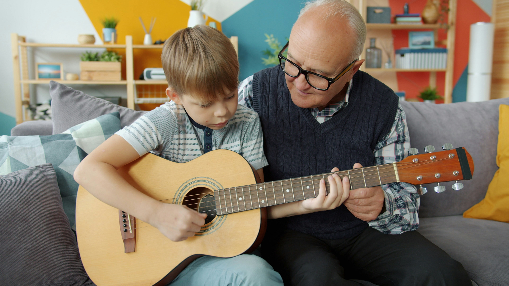

De la petite enfance à l'adolescence, la musique constitue un médiateur thérapeutique particulièrement pertinent, et ce pour une raison simple : elle parle un langage que l'enfant comprend avant même de maîtriser les mots. Accessible, engageante, à la fois sensorielle, émotionnelle et relationnelle, elle offre un cadre d'expression et de transformation là où les approches exclusivement verbales se heurtent parfois à des limites.
Avant de parler, un bébé vocalise, babille, joue avec les sons. Le rapport à la musique est ontologiquement précoce : les nourrissons réagissent aux contours mélodiques, aux variations de rythme et de hauteur bien avant d'accéder au langage articulé. Chez l'enfant plus grand, la musique conserve cette capacité unique à court-circuiter les défenses verbales, à exprimer ce qui ne peut pas - ou pas encore - se dire avec des mots. Pour un enfant en difficulté, qu'elle soit d'ordre psychologique, développementale ou somatique, cela représente un avantage considérable.
Jouer de la musique ensemble - même à un niveau très simple - implique d'écouter l'autre, de s'ajuster, de partager un temps commun, de respecter un tour de rôle. La musique est, par essence, une expérience intersubjective. En séance de musicothérapie, cette dimension relationnelle est au cœur du travail : le thérapeute utilise l'échange sonore et musical comme un espace de rencontre, de communication et de co-construction.

Enfance
Les principaux champs d'application
1. Troubles du spectre autistique (TSA)
C'est l'un des domaines où la musicothérapie a été le plus étudiée chez l'enfant, et les résultats sont encourageants. Les enfants présentant un TSA manifestent souvent une sensibilité particulière à la musique, parfois bien supérieure à leur réactivité au langage parlé. Plusieurs méta-analyses ont mis en évidence les effets suivants :
- Amélioration des compétences de communication (verbales et non verbales) : augmentation du contact visuel, de la vocalisation, des initiatives de communication.
- Développement des habiletés sociales : meilleure capacité à interagir, à partager une activité, à respecter les tours de rôle.
- Régulation émotionnelle et comportementale : réduction des comportements répétitifs et des crises, meilleure tolérance à la frustration.
- Renforcement de l'attention conjointe, c'est-à-dire la capacité à partager un même focus d'intérêt avec une autre personne.
2. Troubles du langage et des apprentissages
Le lien étroit entre musique et langage est aujourd'hui bien établi sur le plan neuroscientifique. Musique et parole partagent des bases neuronales communes, notamment dans le traitement du rythme, de la prosodie, de la segmentation des sons et de la mémoire auditive.
La musicothérapie a montré des effets positifs dans l'accompagnement :
- Des troubles spécifiques du langage oral (dysphasies, retards de parole et de langage) : le chant, les jeux rythmiques et les comptines favorisent l'articulation, l'enrichissement du vocabulaire et la structuration syntaxique.
- De la dyslexie : des programmes de remédiation intégrant un travail rythmique et musical ont montré une amélioration des compétences en conscience phonologique, c'est-à-dire la capacité à identifier et manipuler les sons de la langue.
- Des troubles de l'attention (TDA/H) : la pratique musicale mobilise les fonctions exécutives (planification, inhibition, flexibilité), et le cadre rythmique peut aider l'enfant à structurer son attention dans le temps.
3. Handicap intellectuel et polyhandicap
Pour les enfants porteurs d'un handicap intellectuel ou d'un polyhandicap, la musicothérapie représente souvent une voie d'accès privilégiée, précisément parce qu'elle ne requiert pas de compétences verbales ou cognitives préalables. Un enfant qui ne parle pas, qui ne lit pas, qui ne maîtrise pas les codes sociaux conventionnels, peut néanmoins :
- Produire un son, frapper un tambour, secouer un instrument.
- Réagir à une stimulation sonore par un sourire, un mouvement, un regard.
- Entrer dans un échange sonore avec le thérapeute, même à un niveau très élémentaire.
Ces micro-interactions, lorsqu'elles sont accueillies et amplifiées par le musicothérapeute, deviennent le support d'une communication authentique et d'une reconnaissance de l'enfant en tant que sujet à part entière.
4. Troubles émotionnels et psychiques
La musicothérapie est également largement utilisée dans l'accompagnement des enfants et adolescents présentant :
- Des troubles anxieux : la musique agit sur le système nerveux autonome, favorisant l'activation du système parasympathique (celui du repos et de la récupération). L'écoute musicale, la relaxation sonore, le jeu instrumental permettent de réduire les manifestations somatiques de l'anxiété (tension musculaire, accélération cardiaque) et d'apprendre des stratégies d'autorégulation.
- Des troubles dépressifs : en particulier chez l'adolescent, la musique peut constituer un pont vers l'expression émotionnelle dans une période de la vie où la verbalisation de la souffrance est souvent difficile, voire refusée.
- Des troubles du comportement (agressivité, opposition, difficultés de socialisation) : le cadre musical propose des règles implicites (attendre son tour, écouter, s'ajuster) qui sont intégrées de manière ludique et non frontale, contournant ainsi les résistances que peut susciter un cadre éducatif ou thérapeutique plus classique.
- Des traumatismes psychiques (maltraitance, abus, deuil, migration forcée) : la musicothérapie offre un espace de symbolisation et de mise à distance de l'expérience traumatique. L'enfant peut « jouer » sa colère sur un djembé, « raconter » sa tristesse à travers une mélodie, sans avoir à nommer directement ce qui lui est arrivé.
5. L'enfant hospitalisé et la douleur
En milieu hospitalier pédiatrique, la musicothérapie est de plus en plus intégrée aux protocoles de prise en charge, notamment pour :
- La gestion de la douleur : plusieurs études ont montré une réduction significative de la perception douloureuse chez des enfants bénéficiant de séances de musicothérapie lors de soins invasifs (ponctions, pansements, soins post-opératoires). Les mécanismes impliqués relèvent à la fois de la distraction attentionnelle (la musique capte l'attention et la détourne du stimulus douloureux) et de la modulation neurophysiologique (libération d'endorphines, réduction du cortisol).
- La réduction de l'anxiété pré-opératoire, qui représente une source de stress majeure chez l'enfant.
- L'accompagnement des maladies chroniques (cancers pédiatriques, mucoviscidose, maladies rares) : dans ces parcours de soin longs et éprouvants, la musicothérapie offre un espace de plaisir, de créativité et de normalité au sein d'un quotidien médicalisé. Elle contribue à préserver l'identité de l'enfant au-delà de sa maladie.
L'adolescence
L'adolescence mérite une attention particulière. Période de profondes transformations - corporelles, psychiques, identitaires, et relationnelles - elle est souvent marquée par une difficulté à mettre des mots sur le vécu intérieur, une méfiance à l'égard du monde adulte et des institutions, et parfois un refus explicite de « l'aide » thérapeutique.
Or, la musique occupe une place centrale dans la vie de la plupart des adolescents. Elle est vecteur d'identité, d'appartenance à un groupe, d'expression de soi. Le musicothérapeute peut s'appuyer sur cette affinité naturelle pour créer une alliance thérapeutique là où d'autres approches échouent.
La musicothérapie a montré des résultats prometteurs dans l'accompagnement :
- Des conduites addictives et les comportements à risque.
- Des troubles du comportement alimentaire (anorexie, boulimie), où le rapport au corps et aux émotions est particulièrement complexe.
- Des conduites auto-agressives et les idées suicidaires, en offrant un mode d'expression alternatif à la mise en acte.
- Les problématiques identitaires et de genre, pour lesquelles la musique peut servir d'espace d'exploration et d'affirmation de soi.
Conclusion
De la petite enfance à l'adolescence, la musicothérapie se révèle être un outil thérapeutique d'une remarquable polyvalence. Sa force réside dans sa capacité à s'adresser à l'enfant/l'adolescent dans sa globalité : son corps, ses émotions, sa pensée, sa relation à l'autre. Qu'il s'agisse de soutenir le développement d'un enfant porteur de handicap, d'apaiser l'anxiété d'un jeune patient hospitalisé, de renouer le dialogue avec un adolescent en rupture ou de donner une voix à un enfant que le traumatisme a réduit au silence, la musique offre ce que peu d'autres médiations permettent : un espace où l'on peut être entendu avant même d'avoir parlé.